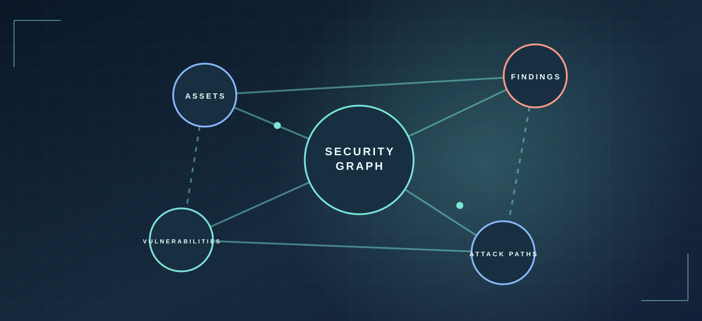

01 / Private project · Active developmentPrivate project · Active development
BUILDINGSentinel Graph AI
I am building a security graph product that connects assets, vulnerabilities, findings, and attack paths so teams can investigate risk in context. The private FastAPI and React codebase is in active development; its application shell and inventory views are being developed, not presented as a launched product.
- Modeling assets, findings, vulnerabilities, and possible attack paths as connected records.
- Developing FastAPI and PostgreSQL services alongside a React and TypeScript interface.
- Designing investigation views; AI-assisted analysis remains planned, not a shipped capability.
In development Architecture and data relationships are the current focus; AI-assisted workflows remain a direction, not a completed feature.
FastAPIPostgreSQLReactSecurity graphIn progress